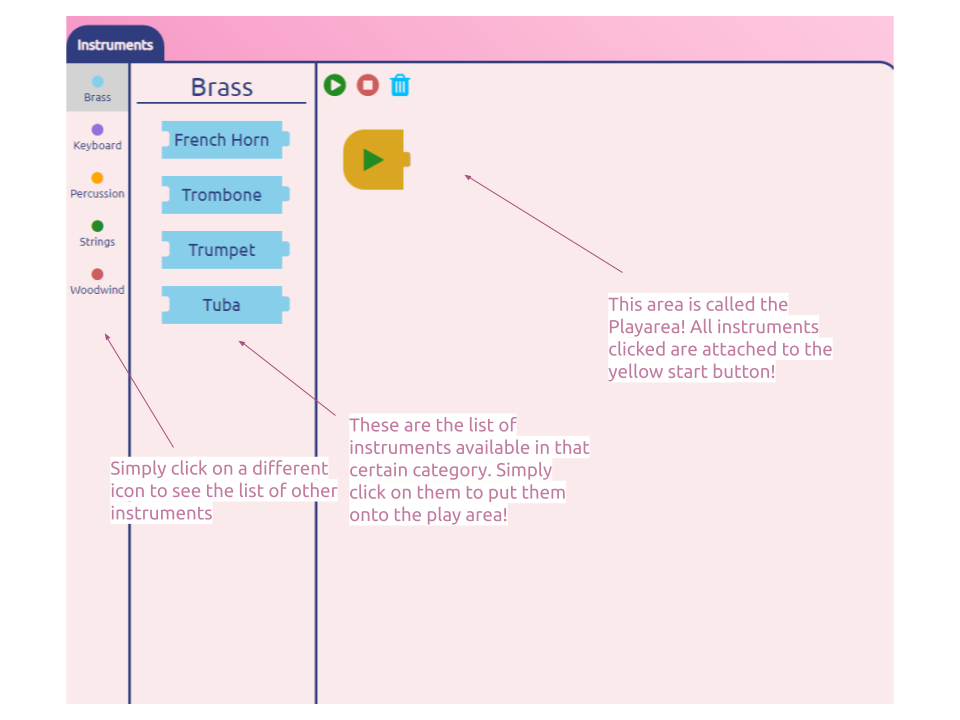
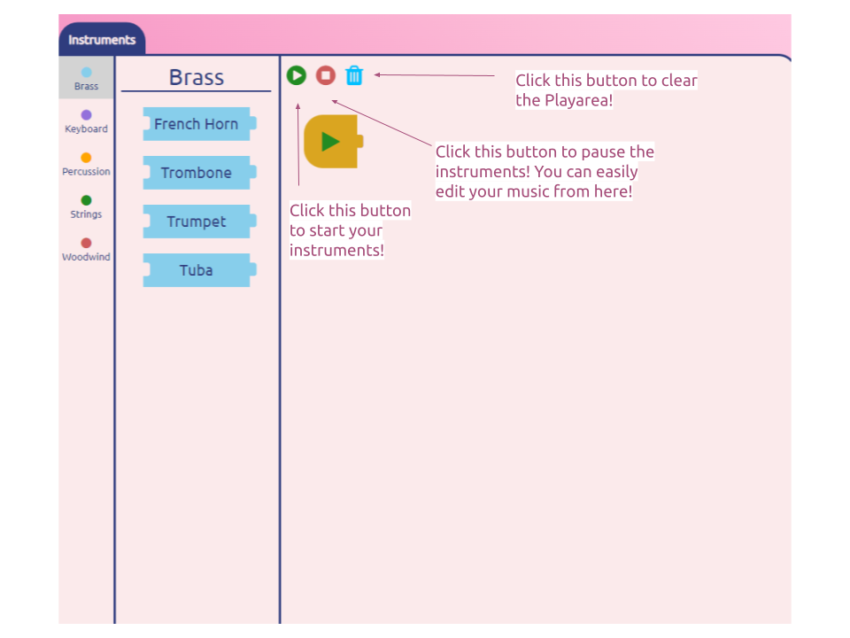

Controls
How to use Music Maker
The premace of Music Maker is that it is a quick, easy, music program for beginners. It uses a simple click-and-drop mechanism where just through a use of your mouse/touch it will automatically place the instrument/sound onto the Playarea! It has a variety of different instruments that allow you to add lots of different sounds, etc. This project is still in a prototype meaning so there are way less feature that I was expecting but it still is very easy and good application! Hope you Enjoy!
STEP 1: Organization
Music Maker has a very simple organization. On the far left in the image you can see the list of different insturments. Once clicking on that, you will get a completely different list of instruments that you can put onto the Playarea!

STEP 2: Buttons
In the Playarea, you can see 3 different buttons. Once you click on the instruments you want, you can click on the green play button to start the music! If you want to pause the program and edit it, you can click the red pause button to pause the music where it is. If you want to completely clear the Playarea, click the blue trash icon!
